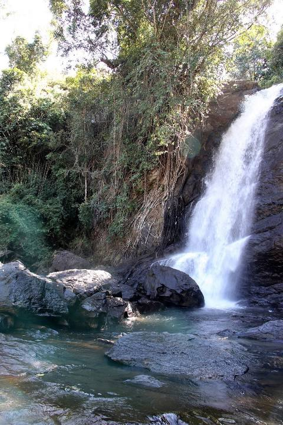

EDAKKAL CAVES
Edakkal Caves are two natural caves at a remote location at Edakkal, 25 km from Kalpetta in the Wayanad.They lie 1,200 m above sea level on Ambukutty Mala.

KURUVADWEEP
Kuruvadweep or Kuruva Island is a 950-acre protected river delta. It comprises three densely wooded uninhabited islands and a few submergible satellite islands.

SOOCHIPARA WATERFALLS
Soochipara Falls also known as Sentinel Rock Waterfalls is a three-tiered waterfall in Vellarimala, Wayanad, India. It is surrounded by deciduous, evergreen and montane forests.